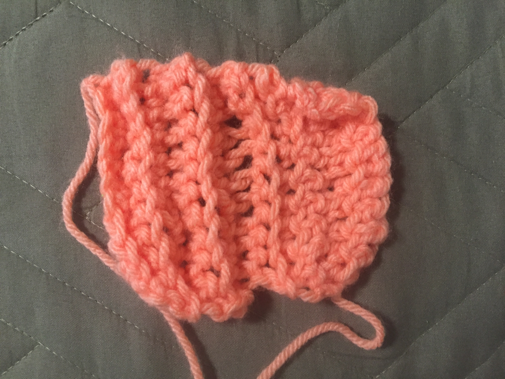

FIRST PROJECT
This was my first ever project. The yarn I used was Caron One Pound in Peach. It is 100% acrylic. It's a pretty nice yarn. It doesn't split and is easy to use. Anyway, this project is a bit lame, but it's the first thing that I ever crocheted, so I'm keeping it on here. I made it using single crochet. However, I messed up in the beginning. You can see that the left and right sides look different. On the left, I accidentally crocheted through the back loop only, which caused the ridges. The right side is the correct way to single crochet. It took me two days to be able to be able to single crochet, even though it was wrong. I had to use several articles, images, and videos. I liked the videos the best, because I could see everything that was happening. This video by simpledaisy helped me figure it out in the end: https://www.youtube.com/watch?v=aAxGTnVNJiE.